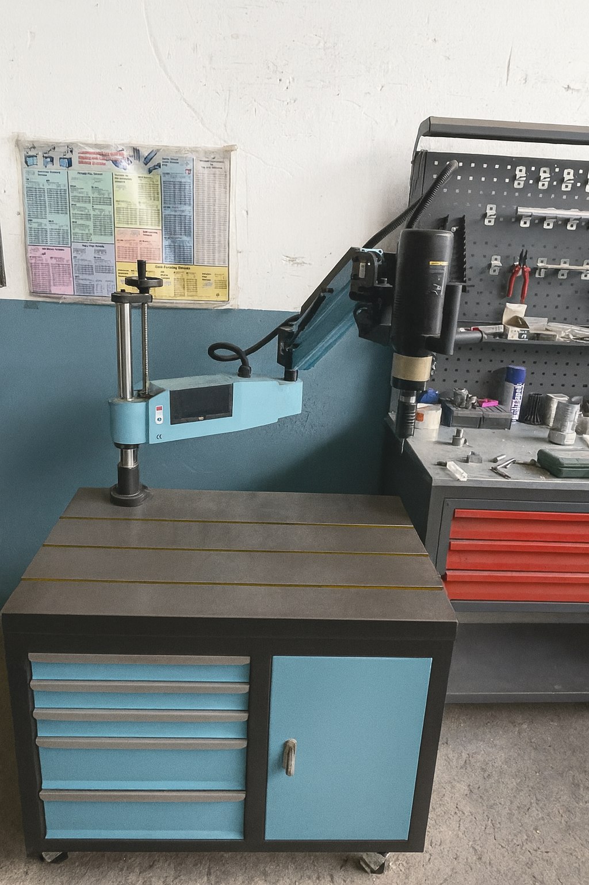
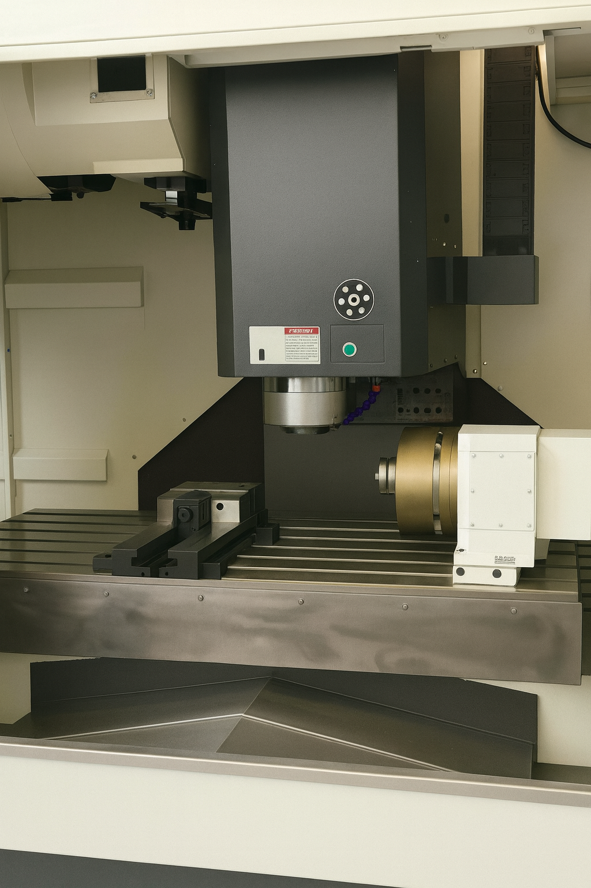
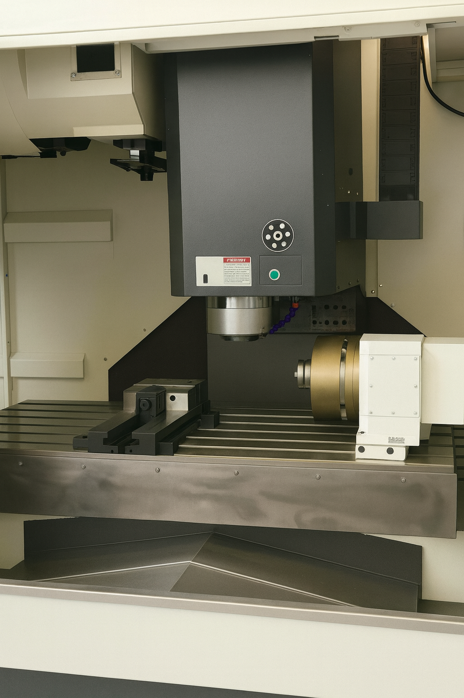
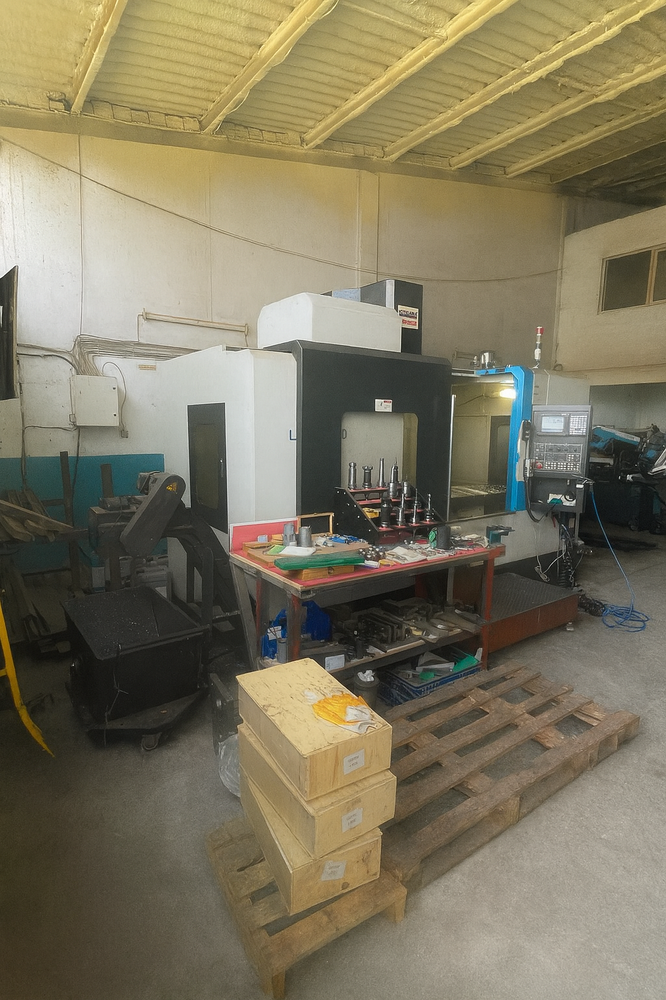
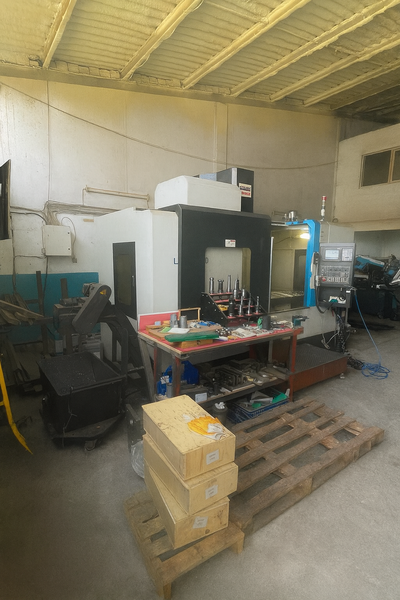

“Hızlı çözüm, kaliteli hizmet”
Aynaz Makine Atölyesine Hoş Geldiniz
2018 yılında kurulan Aynaz Makine; plastik–metal–zamak enjeksiyon kalıpları, boru bükme kalıpları, torna işçiliği ve savunma sanayiine yönelik yedek makine parçaları üretiminde hizmet vermektedir.

Atölye Genel Görünüm
CNC tezgâhlarımız, torna tezgâhlarımız ve yardımcı ekipmanlarımızdan bazı kareler.

 

 



Biz Kimiz?
Şirketimiz sektöre ilk olarak torna işçiliğiyle başlamış, geçen yıllar içinde büyüme hedeflerini adım adım gerçekleştirerek CNC freze, manuel freze ve 2 metrelik universal torna gibi birçok tezgâh yatırımı yapmıştır. Bugün boru bükme kalıpları, metal–plastik–zamak enjeksiyon kalıpları ve savunma sanayiine yönelik özel parçalar üreterek müşterilerine hızlı ve kaliteli çözümler sunmaya devam etmektedir.